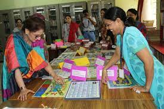

LIBRARY RULES

1. All students of Std III to XII may borrow books from the library.
2. Students are allowed to sit and study in the library for one hour after dispersal.
3. The students who keep the bookis longer than the time permitted will be fined Rs.2/- per day.
4. Reference books should not be taken out of the library.
5. Students should not write in a library book or tear any page out of it.
6. Books taken from the library must be returned two weeks before the semester examination.
7. T.C. will not be issued unless a clearance certificate has been obtained from the librarian also.
8. Maintaining discipline in the library and abiding by rules is mandatory for all or the student may
not be allowed to avail library facility.